Free
computer Tutorials
|
Free
computer Tutorials
|
|
 home home |
|
|||||
Microsoft Word 2007 to 2010Add a Cover Page to your BookletThere are actually a few inbuilt cover pages, on the Insert tab, Pages panel. You can use one of these, if you like. However, reformatting them to suit your needs is a bit tricky. So we'll do our own. First, we can check that the Section breaks are in the right place.
Click back on the Home tab, and locate the Paragraph panel. Now look for the backwards P: 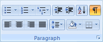 The backwards P is used to show or hide paragraph and symbol formatting marks. Click it once to activate it. You should see this at the top of your two blank pages: 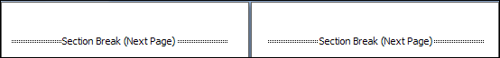 You can zoom out using the plus and minus symbols in the Status Bar in the bottom right of Word. That way, you can see two pages on the screen at once. Or click the View tab, and then the Two Pages item on the Zoom panel. You can change the margins for a single page. They are a bit too big on the cover page, at the moment. So we'll change them. With your cursor flashing at the top of the cover page, click on the Page Layout tab. Locate the Page Setup panel. Click on the Margins item to see a menu appear. Then select Custom Margins at the bottom: 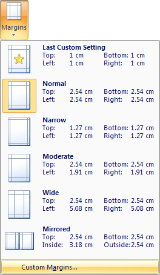 When you click on Custom Margins you'll see a dialogue box appear. This one: 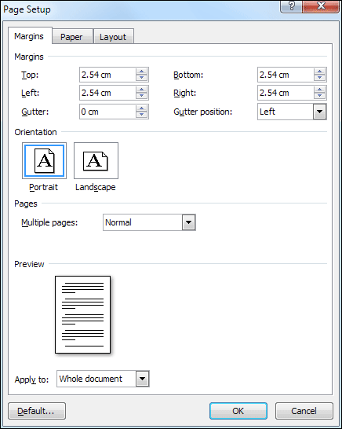 Change the margins to the following: Top: 1 cm (If your measurements are in inches, use 0.4 instead of 1 cm.) Look at the bottom of the dialogue box and locate Apply to. Set it to "This Section". Your dialogue box should look like this before you click OK: 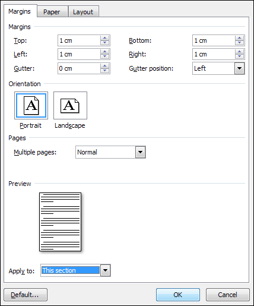 We'll set a border for our cover page. Before doing that, create some space on your page by holding down the Enter key on your keyboard. Keep it held down until the Section Break is at the bottom of your page: (If you go too far, hit the Backspace key) 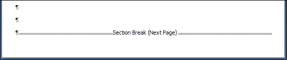 You can now hide the formatting marks by clicking the backward P again (Home tab, Paragraph panel.) To set a border for the cover page, click back on the Page Layout tab. Locate the Page Background panel and click the Page Borders item: 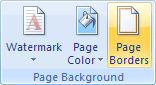 When you click on Page Borders, you'll see the following dialogue box appear: 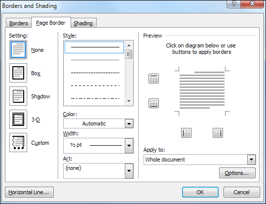 From the Setting list on the left, click on Box. You can create a Box type border by using the four items in the middle: Style, Colour, Width, Art. We'll use the Art item. So click the arrow to see the following list: 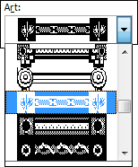 You can select any one you like, but we've chosen a fancy one from the middle of the list. Now locate the Apply to dropdown box on the right and set it to This Section: 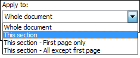 Before clicking OK, your dialogue box should look like this: 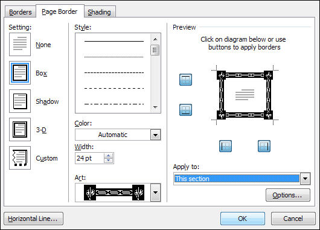 When you're done, click OK. Your cover page will then look like this: 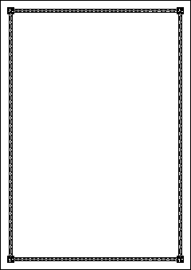 You can still type onto this page. Click your left mouse button about half way up the page, and type a title. Type Fairy Tales. Change the font and font size. Be careful of where your Section Break ends up when you change the font size. Click the backwards P again to check it's still at the bottom. If you add clip art or an image that is too big it will push the section break down onto page 2, and give you a border on this page as well. Use your backspace key to get the section break back onto page 1. Any border that appears on page 2 will then disappear. Your page may now look something like this: 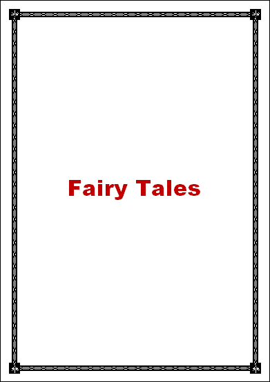 We used an Arial Black font at a size of 48. The title was then centred. We also changed the font colour. To change the colour of a font click the underlined A in the Font panel on the Home tab: 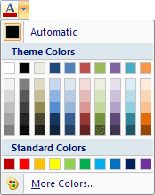 With your title highlighted, select any colour you like. You could add some clip art at this stage, just to liven the cover page up a bit. We'll leave ours, though. Again, be careful of where your section break ends up if you insert clip art.
In the next lesson you'll learn how to add a contents page. How to Add a Contents Page --> <--Back to the Word Contents Page View all our Home Study Computer Courses
|
||||||
|